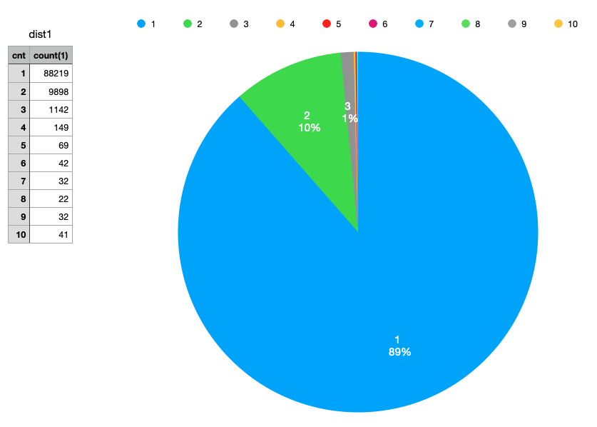
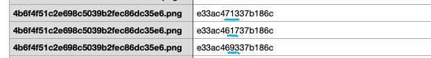
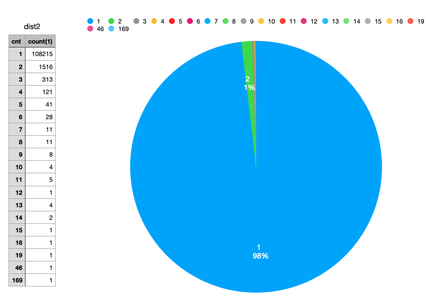
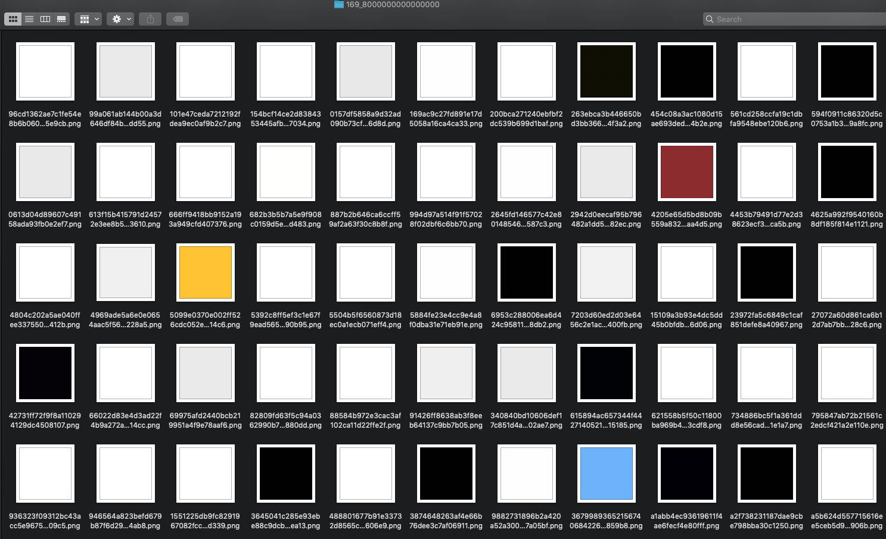
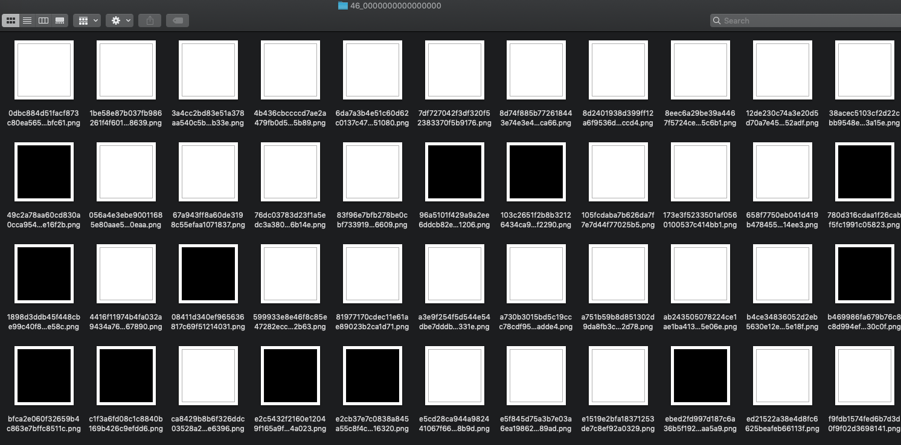
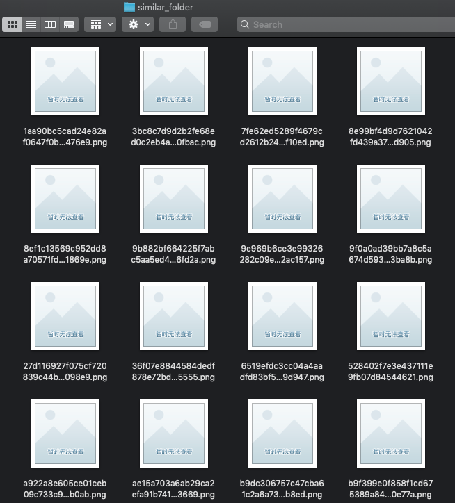
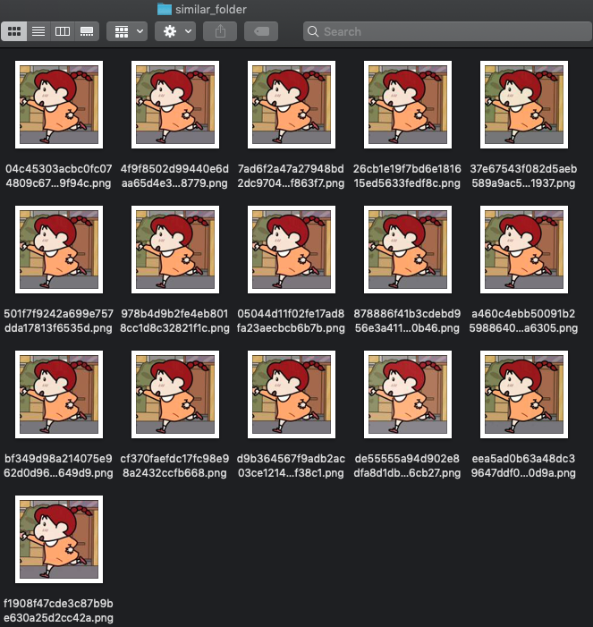

使用 Perceptual hashing 去除微信头像内容干扰
本文是「微信用户授权头像内容带随机干扰的问题」的延续。本文对效果进行量化，并找到一个phash库，达到了更好的效果。
实验框架
相关脚本点此。
实验数据
10 组微信头像，每组 10万个头像。
准备 10万 微信头像链接，重复下载10次：
./download.sh
实验期望
期望目标：
- 1 个头像链接对应 1 个特征：期望特征抽取算法能够剥离微信对头像内容加入的干扰。不然使用密码学哈希算法，1 个头像链接下载 10 次可能就对应 10 个特征了。
- 1 个特征对应 1 个头像链接。跟哈希算法一样，希望哈希冲突尽可能小。
实验
图像降维方法
延续上文中在有限数据下得出的规则，图像降维到：32级灰度，10x10 尺寸。
python extract_feature_p2.py
echo "file,feature" > header.csv
cat header.csv download_1.csv download_2.csv download_3.csv download_4.csv download_5.csv download_6.csv download_7.csv download_8.csv download_9.csv download_10.csv > data.csv
两个指标分析如下：
csvsql --query "select avg(cnt) as expect1 from (select file, count(distinct feature) as cnt from 'data' group by file)" data.csv
expect1
2.186088754189832
csvsql --query "select avg(cnt) as expect1 from (select feature, count(distinct file) as cnt from 'data' group by feature)" data.csv
expect1
1.0051170602511927
每个头像链接，重复下载 10 次的情况下，平均有生成 2.18 个特征。
每个特征，平均对应 1 个头像链接。在期望内，毕竟是密码学哈希算出的特征。
Perceptual hashing
使用了这个库。
python extract_feature_p.py
echo "file,feature" > header.csv
cat header.csv download_1.csv download_2.csv download_3.csv download_4.csv download_5.csv download_6.csv download_7.csv download_8.csv download_9.csv download_10.csv > data.csv
两个指标分析如下：
csvsql --query "select avg(cnt) as expect1 from (select file, count(distinct feature) as cnt from 'data' group by file)" data.csv
expect1
1.1413604158721875
csvsql --query "select avg(cnt) as expect1 from (select feature, count(distinct file) as cnt from 'data' group by feature)" data.csv
expect1
1.0312553837783924
每个头像链接，重复下载 10 次的情况下，平均有生成 1.1 个特征，效果很惊艳！
每个特征，平均对应 1.03 个头像链接。性能也很好了。
详细分析
1 个头像链接对应不同特征数的区间分布：
csvsql --query "select cnt, count(1) from (select file, count(distinct feature) as cnt from 'data' group by file) group by cnt order by cnt" data.csv > dist1.csv

重复下载 10 次的情况下，89%的头像链接都映射到了唯一值。
还有11%都是什么表现呢？大部分如图所示，只有部分位不同。可以理解，phash就是为了相似图搜索设计的。

一个特征值对应不同头像链接的区间分布：
csvsql --query "select cnt, count(1) from (select feature, count(distinct file) as cnt from 'data' group by feature) group by cnt order by cnt" data.csv > dist2.csv

98%的特征值对应一个头像链接。分析下剩余的2%的特征值，一个个处理。
使用如下脚本将相同特征值的图像放一块比较，参数为特征值。
./open_same_hash_images.sh ec9e1413e268c377
有两组图是比较异常的。如图169张图的特征值是一样的。共性是纯色。特征值也很奇怪 8000000000000000。

如图46张图的特征值是一样的，共性是纯色。hash值也很奇怪 0000000000000000。

其他hash值相同的图像文件，确实是相同的图像（肉眼看是一样的），如预期。


TODO
- phash对不同纯色的图，生成的hash值是相同的。8000000000000000/0000000000000000这两个hash值很奇怪。
- 相似的图，生成的hash值可能不同的，2-3位的数字可能不同。查看原理。
总结
虽然对 phash 算法还是有点陌生，但是其效果基本满足了业务需求。至少比自己分析出的规则好很多。
Last modified on 2020-06-11